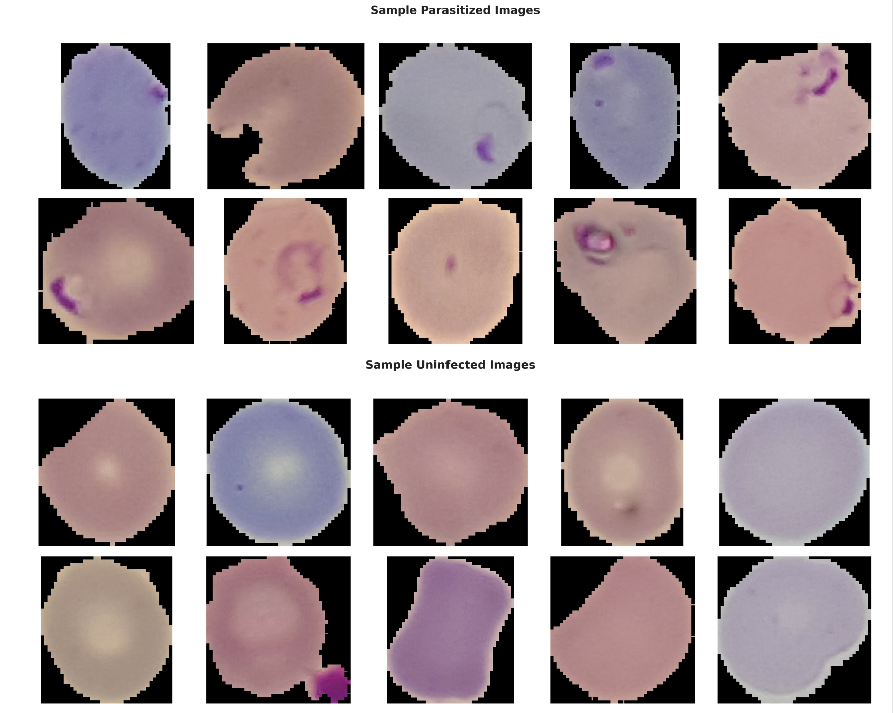
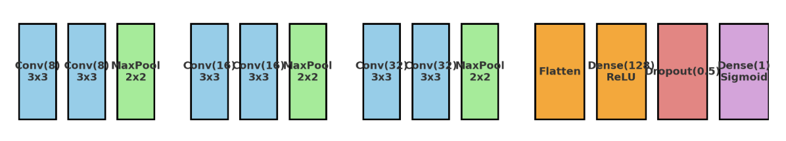
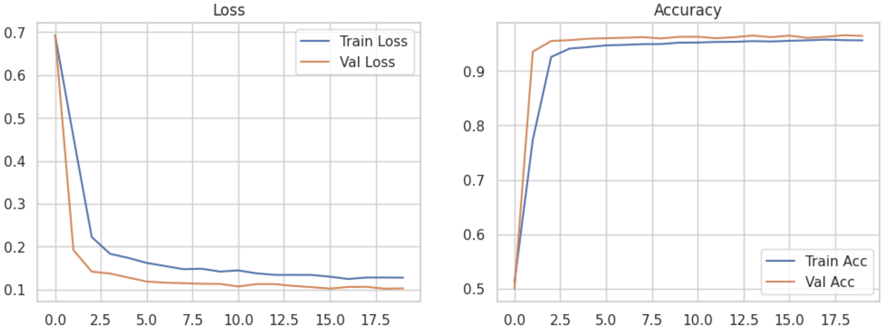

Malaria Scanner END-TO END DEEP LEARNING MALARIA DIAGNOSIS
Checking API... . Computer Vision . CNN . Medical Imaging
Upload blood smear image
JPG, PNG (max 10MB)
Analyzing with Custom CNN...
Underlying Research
"End-to-End Deep Learning Method for Automated Malaria Diagnosis using Blood Smear Images"
Abstract: This study presents an end-to-end deep learning framework for automated malaria diagnosis from blood smear images using 27,558 microscopic images. A Custom CNN was designed and benchmarked against VGG16, ResNet50, and InceptionV3 with transfer learning. The custom CNN and Fusion CNN achieved 96% accuracy, offering robust, scalable detection of parasitized cells as an alternative to manual microscopy.
Performance Comparison of CNN Models
| Model | Parasitized | Uninfected | Accuracy | ||||
|---|---|---|---|---|---|---|---|
| Precision | Recall | F1-score | Precision | Recall | F1-score | ||
| InceptionV3 | 0.91 | 0.95 | 0.93 | 0.95 | 0.91 | 0.93 | 93% |
| VGG16 | 0.88 | 0.84 | 0.86 | 0.84 | 0.88 | 0.86 | 86% |
| ResNet50 | 0.71 | 0.09 | 0.15 | 0.51 | 0.96 | 0.67 | 53% |
| Custom CNN | 0.98 | 0.95 | 0.96 | 0.95 | 0.98 | 0.97 | 96% |
| Fusion CNN | 0.98 | 0.93 | 0.95 | 0.93 | 0.98 | 0.96 | 96% |
8 Conv Layers
Fusion CNN (Custom + InceptionV3)
20 Epochs · Adam lr=0.001
Sample Dataset Images

Sample images from the dataset, showing both healthy and parasitized blood cells.
Click image to enlarge
Click image to enlarge
Custom CNN Architecture
8 Convolutional Layers Design

CNN with 8 convolutional layers architecture.
Click image to enlarge
Click image to enlarge
Dataset & Experimental Setup
27,558
Total Images
50/50
Parasitized/Uninfected
80/20
Train/Test Split
CPU Only
16GB RAM
Custom CNN Architecture

Accuracy and loss curves for training and validation.
Click image to enlarge
Click image to enlarge
Future Directions
• Multimodal integration with clinical/demographic data
• Attention mechanisms & Vision Transformers
• Deployment on resource-constrained devices (mobile diagnostics)
• Explainable AI (XAI) for clinical interpretability
• Attention mechanisms & Vision Transformers
• Deployment on resource-constrained devices (mobile diagnostics)
• Explainable AI (XAI) for clinical interpretability
Cite this Research
Duftimana, E. (2025). End-to-End Deep Learning Method for Automated Malaria Diagnosis using Blood Smear Images. University of Rwanda, College of Science and Technology.
📄 BibTeX:
@phdthesis{duftimana2025malaria,
author = {Duftimana, Esaie},
title = {End-to-End Deep Learning Method for Automated Malaria Diagnosis using Blood Smear Images},
school = {University of Rwanda},
year = {2025}
}
@phdthesis{duftimana2025malaria,
author = {Duftimana, Esaie},
title = {End-to-End Deep Learning Method for Automated Malaria Diagnosis using Blood Smear Images},
school = {University of Rwanda},
year = {2025}
}